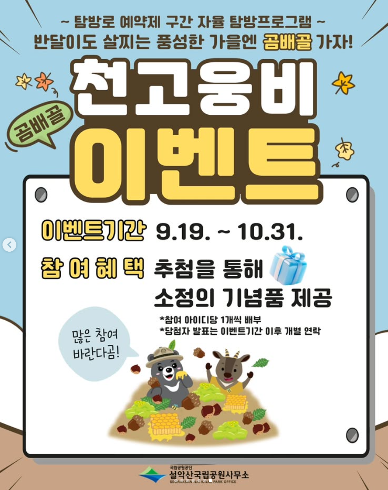
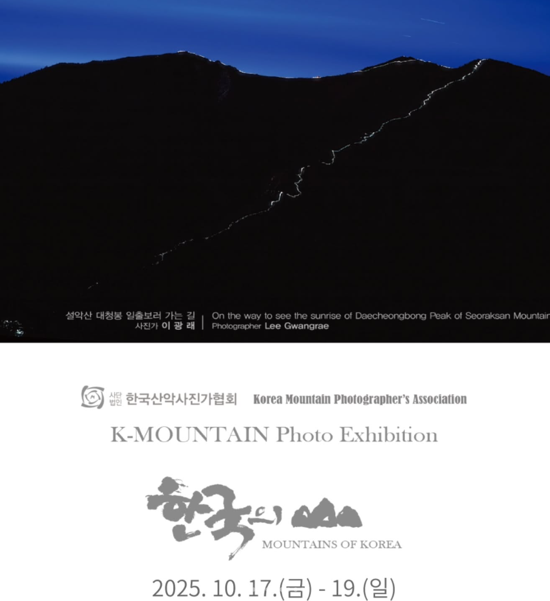
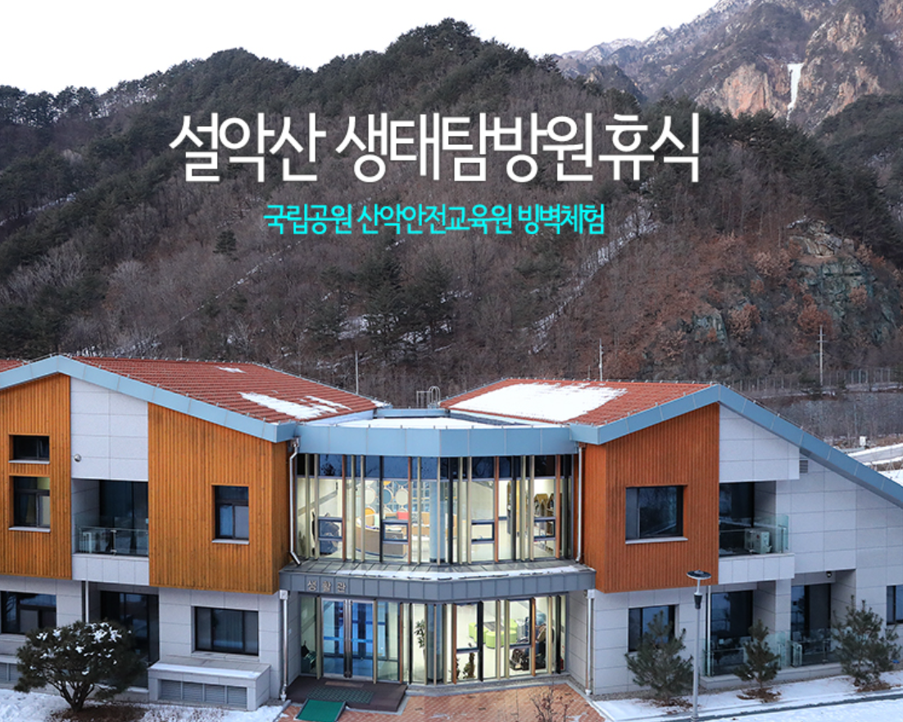

탐방안내소 내부에서 대형 미디어아트와 드론과 프로젝션 맵핑 기술을 결합해 설악산의 자연경관, 지형, 생태를 입체적이고
예술적으로 체험하는 몰입형 전시입니다. 또한 챗GPT 기반 안내부스가 다국어로 탐방객에게 정보를 제공하며,
생태교육과 사진전 등 다양한 문화예술 콘텐츠를 제공합니다.

국립공원공단 예약시스템에서 탐방로예약제 예약 후 예약한 날짜에 곰배골 탐방하러 도착합니다.
탐방로를 가면서 5개 지점에서 QR코드 스캔 후 영상을 보고 퀴즈를 맞추면 간식을 제공합니다. 이 후에는 추첨을 통해 소정의 상품을 드립니다.

한국산악사진가협회에서 주최하는 <2025 K-mountain 한국의 산 사진전>이 설악산국립공원 탐방안내소에서 열립니다.
액자 속 전국 명산의 아름다움을 눈에 담고, 설악의 가을 풍경도 함께 경험할 수 있습니다.

설악산국립공원 산악안전교육원에서 제공하는 빙벽 체험 프로그램은 겨울철 얼음으로 된 암벽을 등반하는 체험 활동으로,
전문 강사의 안전 교육과 장비 지원을 받아 체험할 수 있습니다. 이 프로그램은 설악산 겨울 산행의 매력을 안전하게 경험할 수 있도록 마련되었으며,
특히 겨울 스포츠 및 등산 초보자들에게 매우 유익한 체험으로 인기가 높습니다.